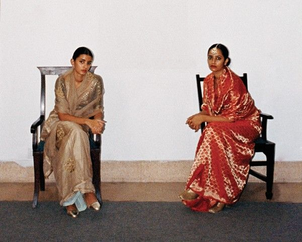
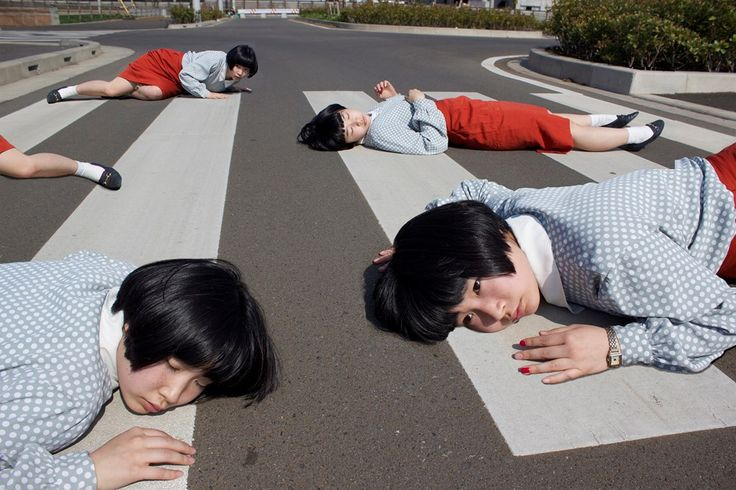
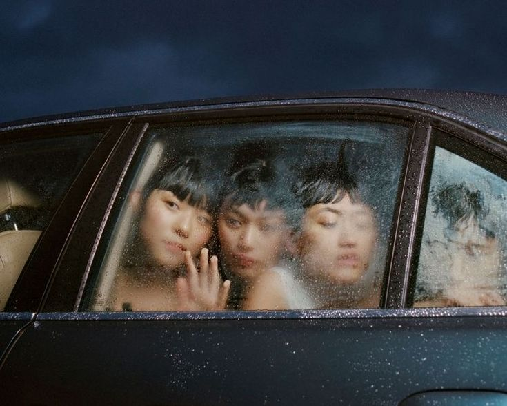
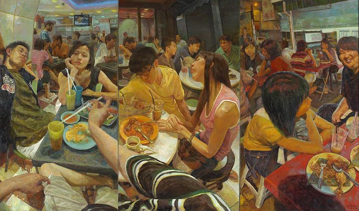
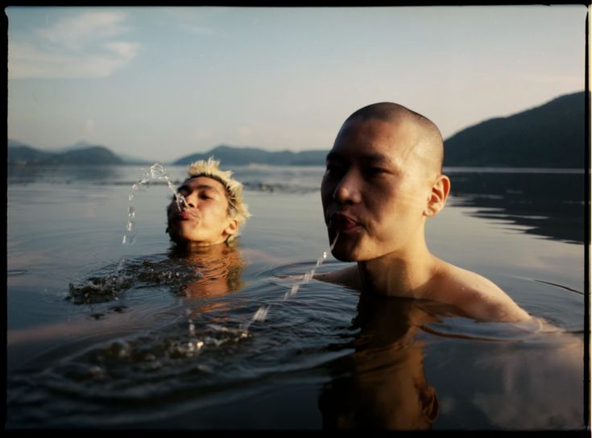
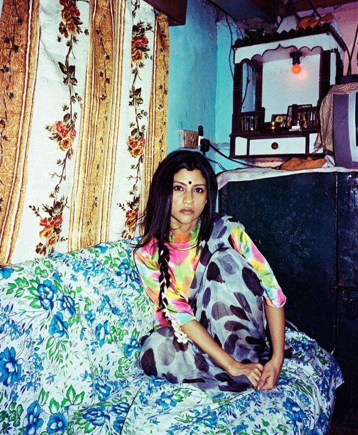
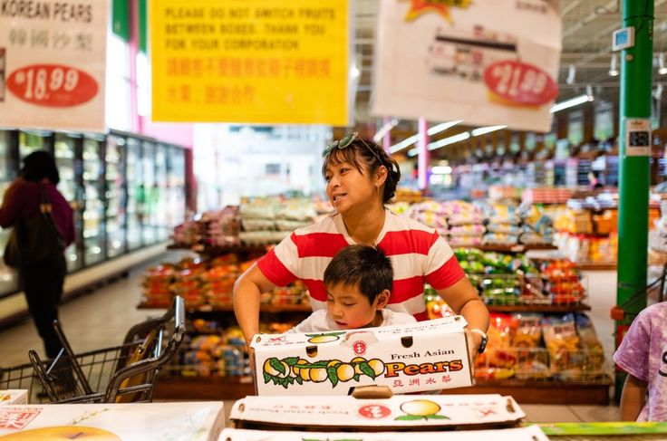
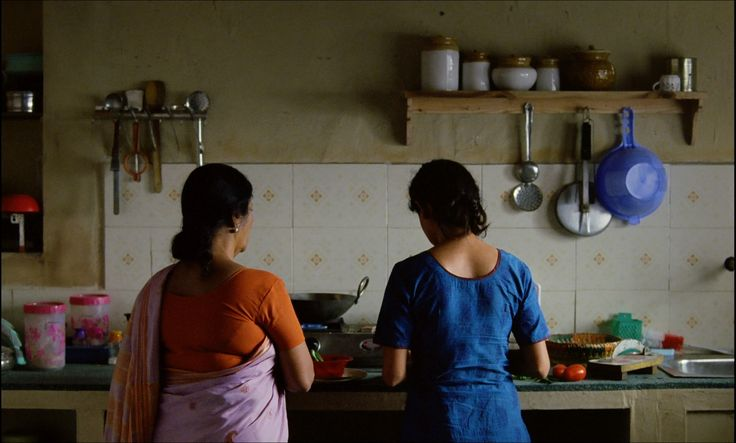

Women in SarisTraditional Sri Lankan LampraisAsian American kids sitting on a phone booth

Photographer Izumi Miyazaki's self portrait

Photographer Izumi Miyazaki's self portrait

Campaign photo for clothing brand, Sundae School

"A summer in Taipei" by Joe HuangCampaign photo for clothing brand, Sundae School

A Asian American women in traditional dress

The supermarket

Two women make a meal together